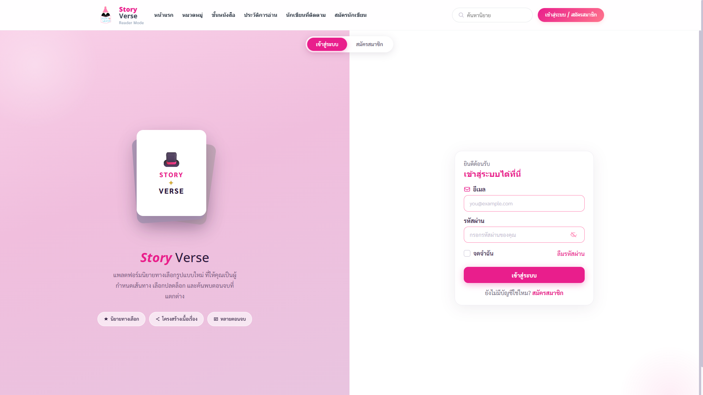
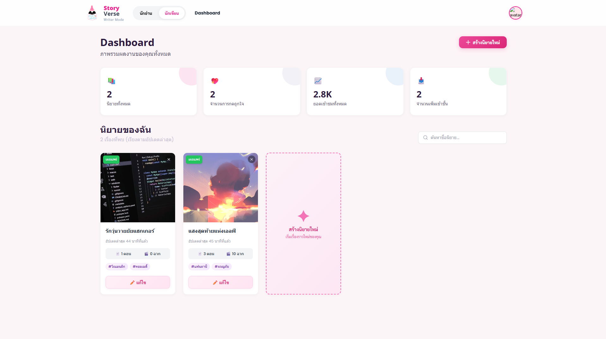
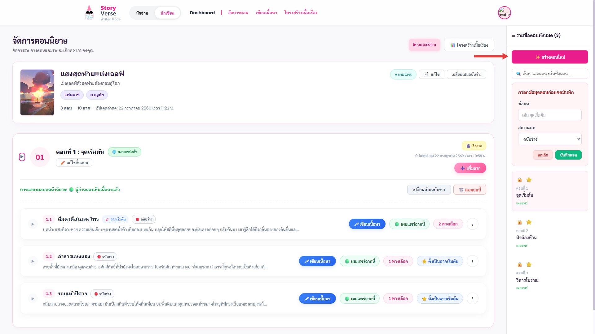
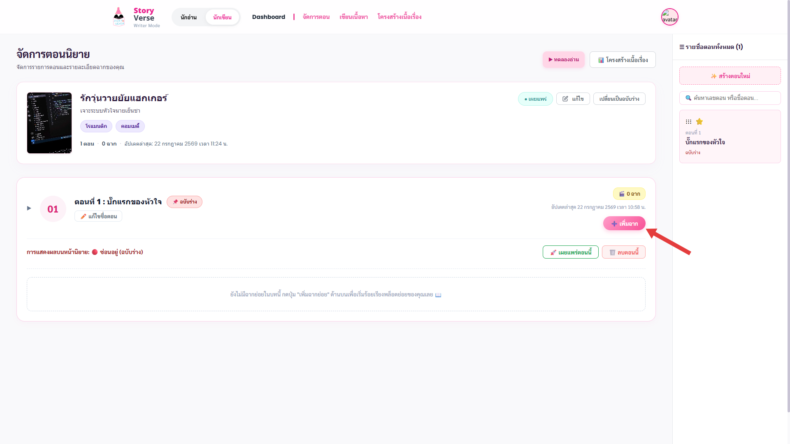
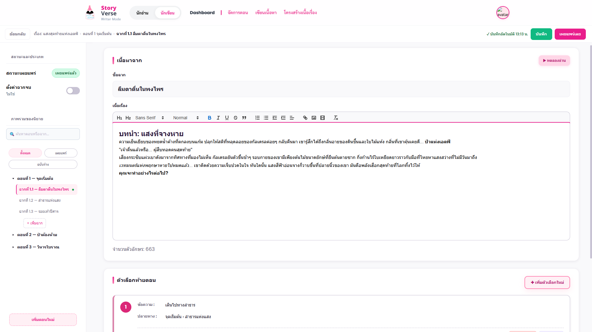
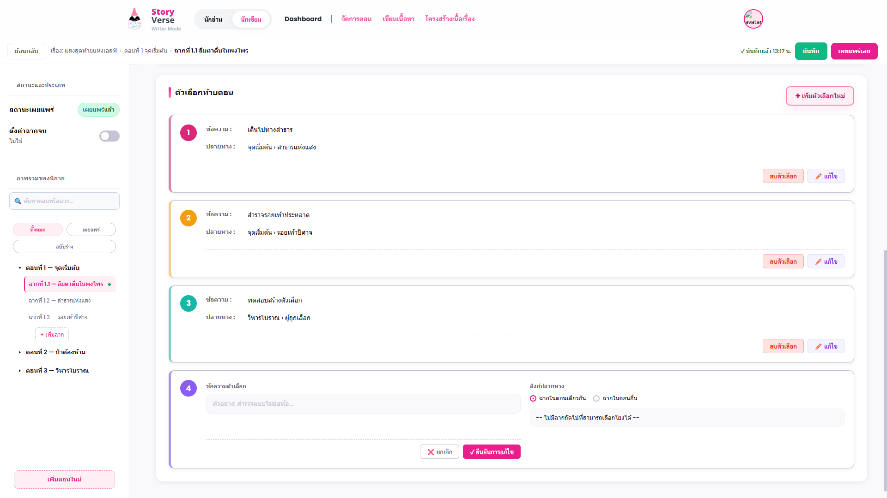
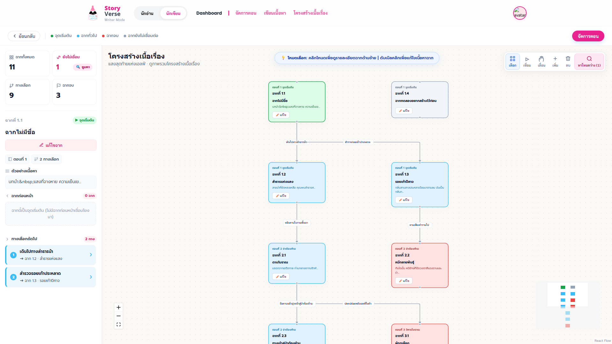

เว็บไซต์นิยายทางเลือก คือ แพลตฟอร์มเว็บแอปพลิเคชันยุคใหม่ที่ออกแบบมาสำหรับทั้งนักเขียนและนักอ่าน โดยมุ่งเน้นการเพิ่มประสบการณ์การอ่านที่มีความยืดหยุ่นและมีส่วนร่วมมากกว่านิยายรูปแบบเชิงเส้นแบบดั้งเดิม ให้กลายเป็น "นิยายแบบโต้ตอบได้" (Interactive Fiction) ที่ผู้อ่านสามารถเลือกเส้นทางการดำเนินเรื่องของตัวเองได้ในตอนท้ายของแต่ละบท
จุดประสงค์หลักในการใช้งาน:
ก่อนเริ่มต้นสร้างนิยาย นักเขียนจะต้องทำเข้าสู่ระบบหรือสมัครสมาชิกเพื่อเก็บข้อมูลนิยายของคุณได้อย่างปลอดภัย:
เมื่อลงทะเบียนและเข้าสู่ระบบสำเร็จแล้ว จะได้รับสิทธิ์เริ่มต้นเป็นนักอ่าน หากต้องการใช้เครื่องมือสำหรับนักเขียนเพื่อสร้างนิยาย สามารถขอสิทธิ์นักเขียนได้จากเมนูสมัครนักเขียน โดยระบบจะตรวจสอบและอนุมัติให้คุณเป็นนักเขียนเพื่อเริ่มต้นสร้างสรรค์ผลงานของคุณ

เมื่อเข้าสู่ระบบสำเร็จ หากบัญชีได้รับสิทธิ์เป็นนักเขียน คุณสามารถใช้เครื่องมือสร้างนิยายได้จากการกดโหมดนักเขียนที่แถบเมนู และจะเริ่มต้นด้วยหน้า Dashboard ซึ่งเป็นศูนย์กลางหลักในการจัดการนิยายทั้งหมดของคุณ:
คลิกปุ่มสร้างนิยายใหม่ กรอกข้อมูลชื่อเรื่อง, คำอธิบายสั้นๆ, เลือกหมวดหมู่ , เรื่องย่อหรือแนะนำนิยาย อัปโหลดภาพปกนิยายและการตั้งค่าเบื้องต้นของนิยาย เพื่อเริ่มต้นโครงสร้างนิยายเรื่องใหม่ในระบบ
นักเขียนสามารถเลือกนิยายและกดแก้ไขเพื่อไปยังหน้าจัดการรายละเอียดนิยาย เขียนเนื้อหา และดูโครงสร้างเนื้อเรื่องนิยายได้
หากต้องการยกเลิกการเขียนนิยายเรื่องนั้นๆ สามารถกดยืนยันการลบนิยายออกจากระบบได้อย่างถาวร
แสดงผลสถานะนิยายแต่ละเรื่องอย่างเด่นชัด ได้แก่ เผยแพร่ (แสดงต่อนักอ่านทั่วไป) หรือ ฉบับร่าง (เก็บไว้แก้ไขเป็นการส่วนตัว)

เพื่อให้นักเขียนเข้าใจวิธีการทำงานของระบบที่ถูกต้องและเขียนนิยายได้อย่างไหลลื่น แนะนำให้ปฏิบัติตามแผนผังความเชื่อมโยงของระบบการสร้างนิยายดังต่อไปนี้:
ทำไมต้องใช้โครงสร้างนี้? นิยายทางเลือกในระบบถูกประมวลผลเป็นแบบ Graph โดยมีโครงสร้างระดับชั้นเป็น:
นิยาย ➔ ตอน (Chapters) ➔ ฉากย่อย (Scenes) ➔ ตัวเลือกเชื่อมโยง (Choices)
ดังนั้นคุณจะต้องสร้าง "ตอน" ขึ้นมาก่อนเพื่อรองรับ "ฉากย่อย" จากนั้นจึงเข้าไปเขียนเนื้อหาในฉากย่อย และสร้างตัวเลือกเชื่อมโยงฉากเหล่านั้นเข้าด้วยกันเป็นโครงข่ายเส้นเรื่อง
ขั้นตอนเริ่มต้นหลังจากสร้างนิยายใหม่คือกดเข้าไปที่ปุ่ม **"แก้ไข"** เพื่อเข้าสู่หน้ารายการตอนของนิยายเรื่องนั้นๆ
ในหน้าจัดการตอน นักเขียนสามารถดูรายละเอียดนิยายและแก้ไขได้ รวมถึง ทดลองอ่าน เพื่อตรวจสอบความถูกต้องของนิยายและการแสดงผลในมุมมองของนักอ่าน และใช้เครื่องมือจัดการโครงสร้างของนิยาย เช่น สร้างหรือลบตอน แก้ไขชื่อตอน เรียงลำดับตอน ตั้งค่าสถานะเผยแพร่ของตอนและฉาก เพิ่มหรือลบฉาก สร้างและเชื่อมตัวเลือก
การสร้างตอนใหม่:

ฉากย่อยคือส่วนสำคัญที่สุดในการเก็บข้อความเนื้อหาที่จะปรากฏแก่นักอ่าน โดยใน 1 ตอนสามารถมีหลายฉากย่อยเพื่อรองรับผลลัพธ์ทางเลือกที่แตกต่างกัน
การเพิ่มฉากย่อยใหม่:

เมื่อกดปุ่ม **"เขียนเนื้อหา"** ในฉากย่อยที่ต้องการ ระบบจะนำคุณเข้าสู่หน้าต่างเขียนรายละเอียดเนื้อหาอย่างเต็มรูปแบบ

ระบบใช้เครื่องมือจัดหน้าแบบ Rich Text (Quill Editor) คุณสามารถจัดตัวหนา ตัวเอียง ขีดเส้นใต้ กำหนดขนาดฟอนต์ จัดตำแหน่งข้อความ (ชิดซ้าย/กึ่งกลาง/ชิดขวา) และสามารถอัปโหลดภาพประกอบประกอบเนื้อเรื่องนิยายได้โดยตรง
หากฉากย่อยนั้นเป็นฉากสุดท้ายของเรื่องราวดังกล่าว นักเขียนสามารถเลื่อนสวิตช์ **"ตั้งค่าเป็นฉากจบ"** และระบุประเภทฉากจบ ได้แก่:
🌸 Good Ending | 💀 Bad Ending | 👑 True Ending | 🔮 Secret Ending
พร้อมระบุชื่อและคำอธิบายฉากจบ เพื่อปลดล็อก Achievement ลงคลังฉากจบของนักอ่านเมื่ออ่านมาถึงฉากนี้
ตัวเลือกคือจุดเชื่อมต่อที่จะพานักอ่านเดินทางไปยังฉากถัดไป โดยนักเขียนสามารถกำหนดข้อความของปุ่มและระบุฉากปลายทางที่ต้องการให้ย้ายไปได้

ระบบมีเครื่องมือ **"โครงสร้างเนื้อเรื่อง"** ที่ช่วยให้นักเขียนมองเห็นภาพรวมของเส้นเรื่องทั้งหมดเป็นกราฟ เพื่อวิเคราะห์ทิศทางและตรวจสอบความถูกต้อง

เพื่อให้การใช้งานระบบมีประสิทธิภาพสูงสุดและไม่เกิดข้อผิดพลาดในการแสดงผลบนหน้าแผนผังหรือหน้าสำหรับนักอ่าน โปรดอ่านข้อแนะนำและกฎเกณฑ์ในการสร้างนิยายดังต่อไปนี้:
เว็บไซต์อยู่ในระหว่างการพัฒนา จึงออกแบบมาสำหรับการใช้งานบนคอมพิวเตอร์เท่านั้น หากคุณเข้าผ่านโทรศัพท์มือถือ ระบบจะแสดงผลไม่สมบูรณ์และอาจเกิดข้อผิดพลาดในการสร้างเนื้อเรื่องได้ หากระบบพัฒนาเสร็จสมบูรณ์ จะมีการให้ใช้งานบนโทรศัพท์มือถือได้ในอนาคต
คุณจำเป็นต้องสร้าง "ตอน (Chapter)" ขึ้นมาก่อนเสมอ ➔ จึงจะสามารถสร้าง "ฉากย่อย (Scene)" ไว้ภายในตอนนั้นได้ และฉากย่อยทั้งหมดจะต้องได้รับการเขียนเนื้อหาก่อน ถึงจะสามารถนำมาเชื่อมโยงกันได้
ข้อมูลโหนดต่างๆ บนกราฟจะถูกสร้างและจัดวางตำแหน่งตามข้อมูลฉากย่อยจริงที่คุณสร้างไว้ในหน้าจัดการตอนหรือหน้าเขียนเนื้อหา หากมีการสร้าง/ลบฉากย่อยหรือทางเลือกในหน้าอื่น ข้อมูลบนกราฟจะซิงค์อัปเดตตรงกันทันทีโดยเรียลไทม์
โหนดฉากที่ยังไม่ได้เชื่อมต่อ คือโหนดใดๆ ก็ตามที่ไม่ใช่ฉากจุดเริ่มต้น และ **ไม่มีเส้นทางเชื่อมโยงขาเข้า (เส้นทางที่เชื่อมจากฉากก่อนหน้า)** ซึ่งผู้อ่านจะไม่มีทางเดินเรื่องมาถึงฉากเหล่านี้ได้ ให้ใช้เครื่องมือค้นหาโหนดว่างบนแถบเพื่อตรวจสอบจุดเชื่อมต่อให้ครบถ้วน และแก้ไขให้โหนดเหล่านี้เชื่อมต่อกับฉากก่อนหน้าเพื่อให้ผู้อ่านสามารถเข้าถึงได้